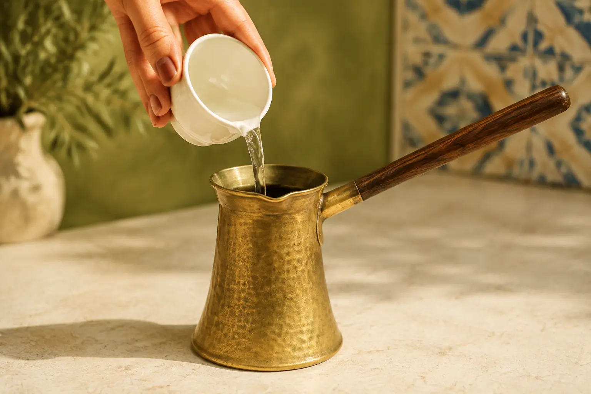
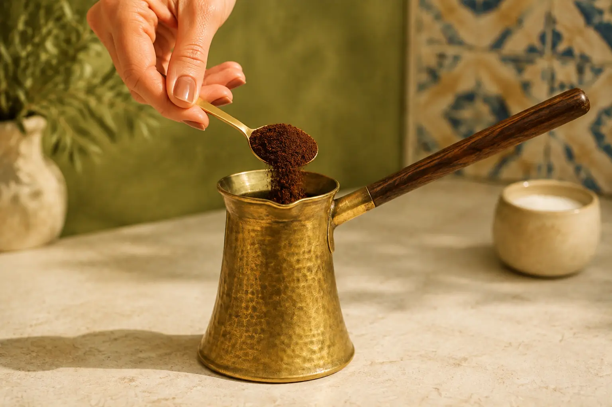
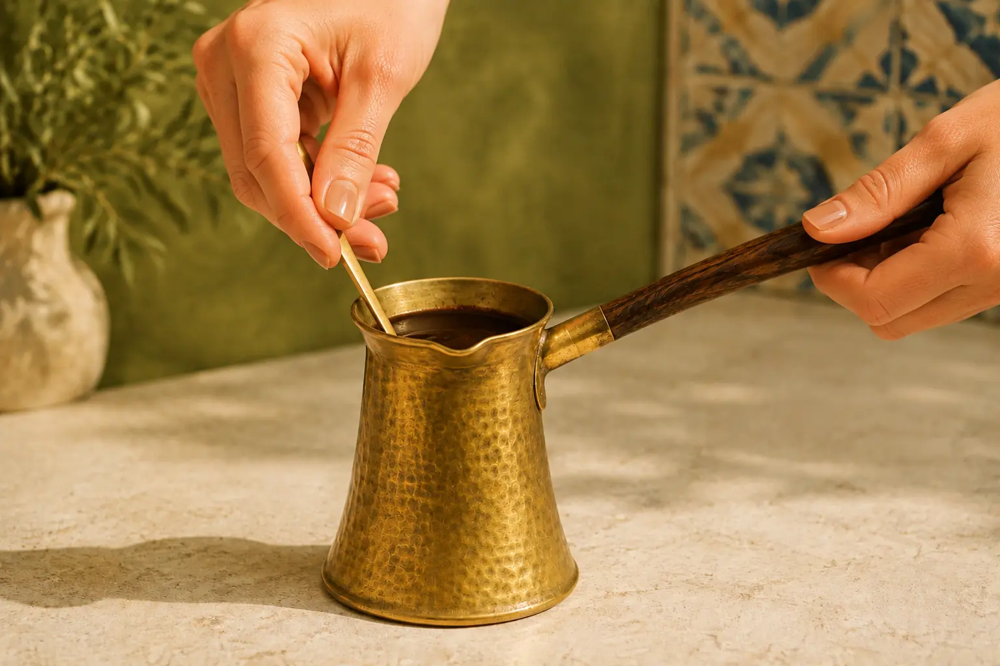
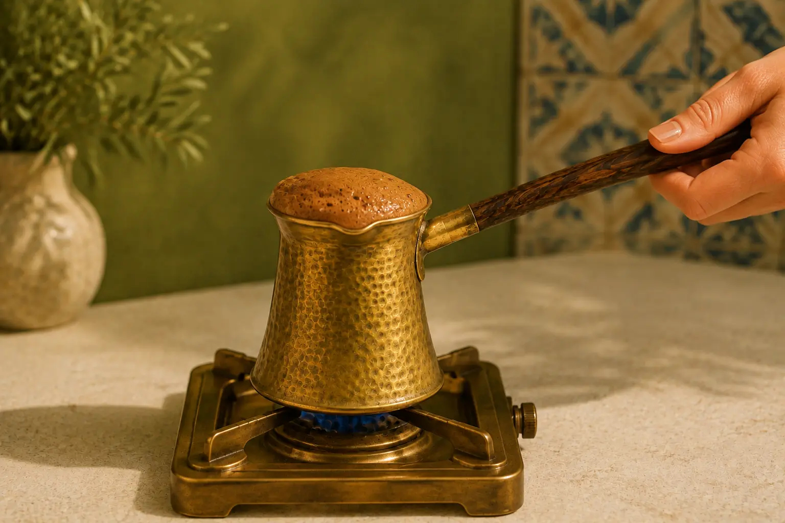
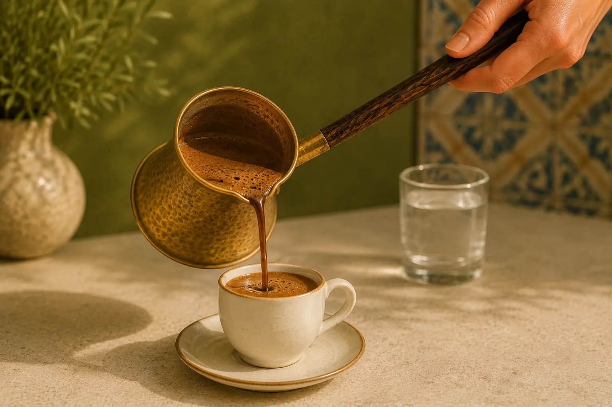

Step 01
Measure the water
Pour one small cup of cold water into the briki for each serving you plan to prepare.

Traditional fine-ground coffee with cardamom, aromatic and warmly spiced, prepared slowly in a Greek briki for a bright beginning.
How to brewA gentle, foam-topped preparation that brings the coffee and cardamom together.

Pour one small cup of cold water into the briki for each serving you plan to prepare.

Add one heaping teaspoon of Aleppo Dawn per cup. Add sugar now, if desired.

Stir until evenly combined. Once the briki is placed over the heat, allow the coffee to remain undisturbed.

Heat slowly over low heat. Lift the briki away as the foam reaches the rim, before the coffee boils.

Pour gently into the cup, preserve the foam, and let the fine grounds settle for about one minute.
Serve with a small glass of water and enjoy the warm cardamom aroma before the first sip.
Explore the collection